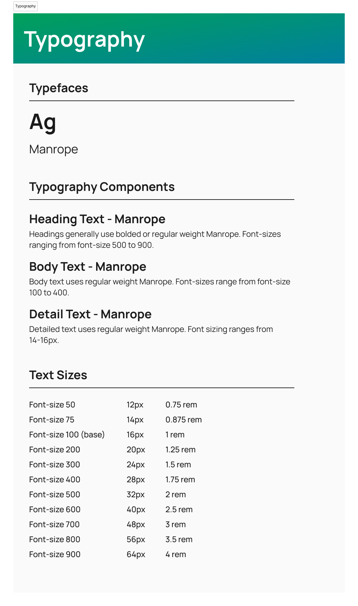
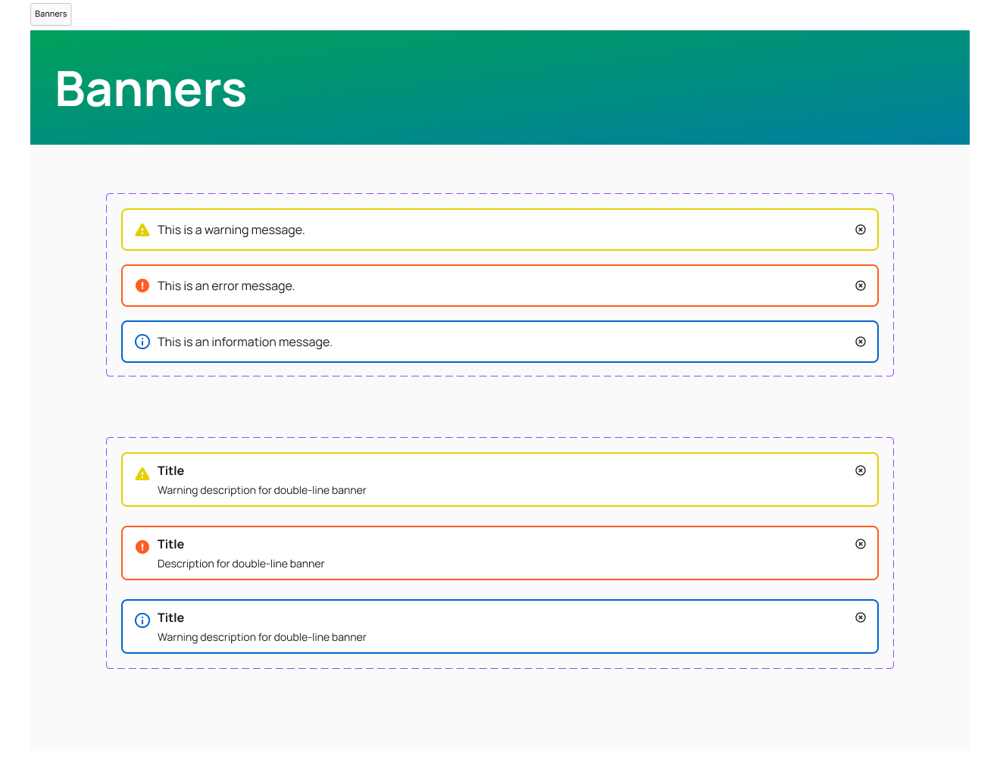
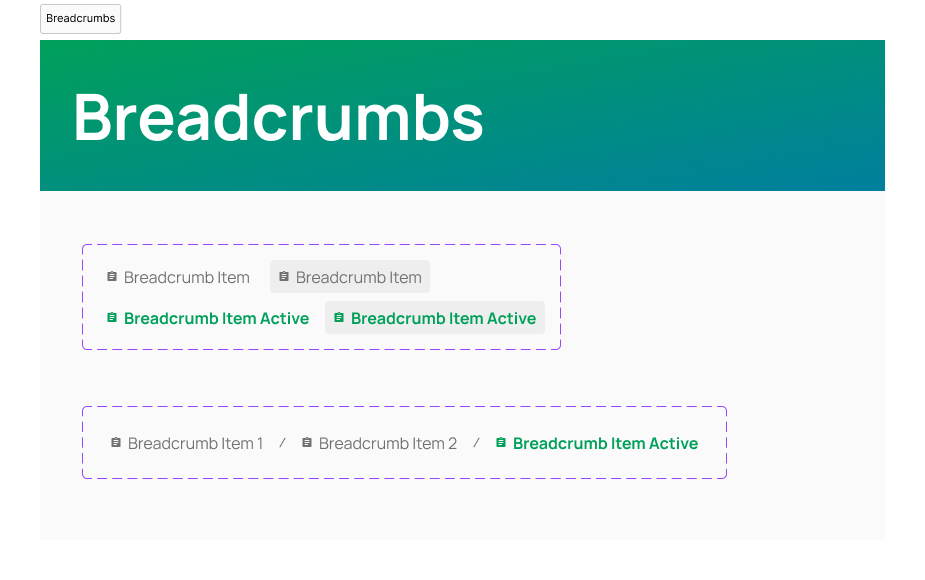
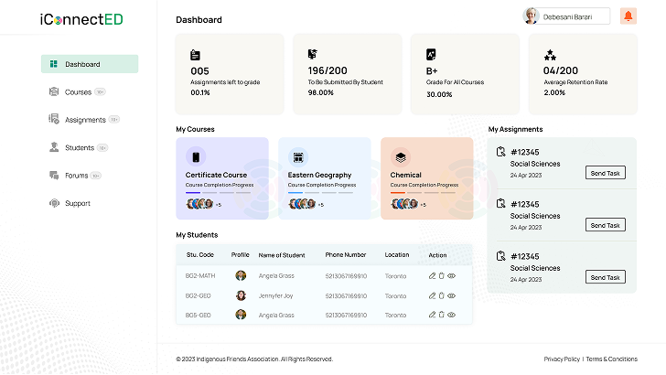
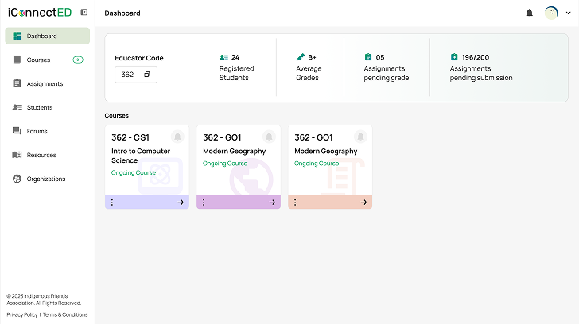
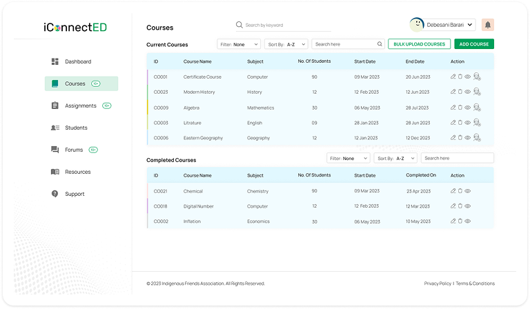
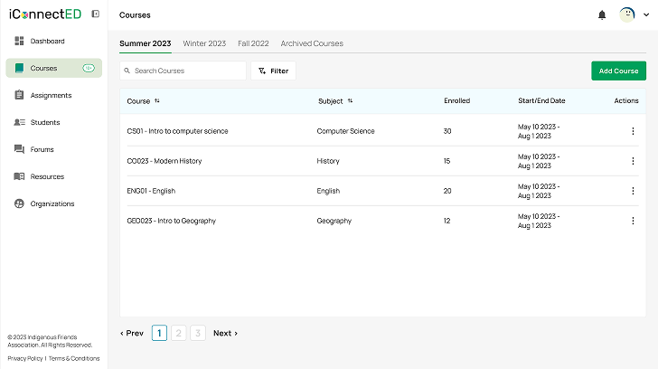

iConnectED
Positive learning experiences for underserved and marginalized communities
A mobile learning platform providing underserved communities with educational content via social media messaging apps. It is currently in active development.

- The Issue
- Inconsistent, inaccessible designs with poor information hierarchy were holding the platform back from launch.
- My Job
- I created a cohesive design system, refined usability through new designs, and iterated on existing designs based on user feedback and research.
- Responsibilities
- UX/UI Design, Prototyping
- Tools
- Figma, Notion, Gitbook, Storybook
- Results
- Faster development and more efficient sprints, with designs now being tested and launched to teachers in remote countries.
Before launch, we asked, What's standing between users and learning?
We focused on systematically addressing key issues, starting with critical areas needed to launch the platform, including…
- Lack of design consistency
- Inaccessible design
- Poor information hierarchy across the site
Our goal was to implement a design system while creating new designs to meet evolving stakeholder priorities and adding features each sprint.
Crafting a robust design system
As the platform scaled with more features, users, and team members, I ensured components and design elements were adaptable and scalable, using advanced properties for complex components.



+ 20 more design system component categories
Simplifying the UX with new designs
I optimized the platform for quick access to hotspots and simplicity, drawing on pre-existing UX patterns from social media sites and learning platforms.
Designed for non-power users, it caters to those without access to advanced technology.
Dashboard screens


Courses screens


The results of the new designs
Because the new designs were built from design system elements, development time decreased and efficiency increased with every weekly sprint. Documenting features and functionality also helped developers translate designs into better code.
The future of iConnectED
iConnectED is still in active development and is being tested and launched with teachers in remote countries. The Indigenous Friends Association plans to expand iConnectED further and continue the project.
Check out the website